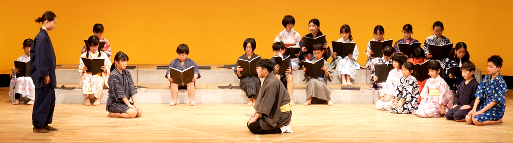
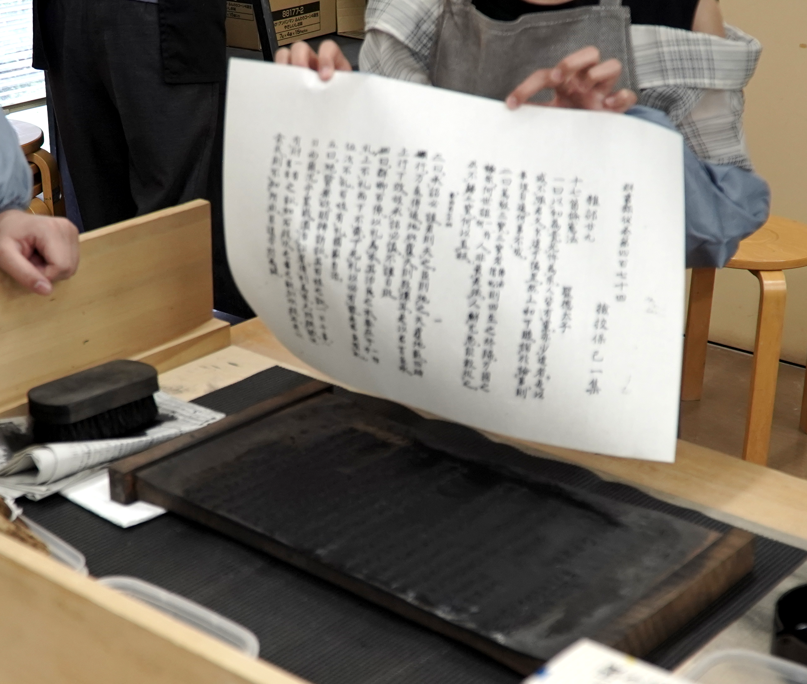
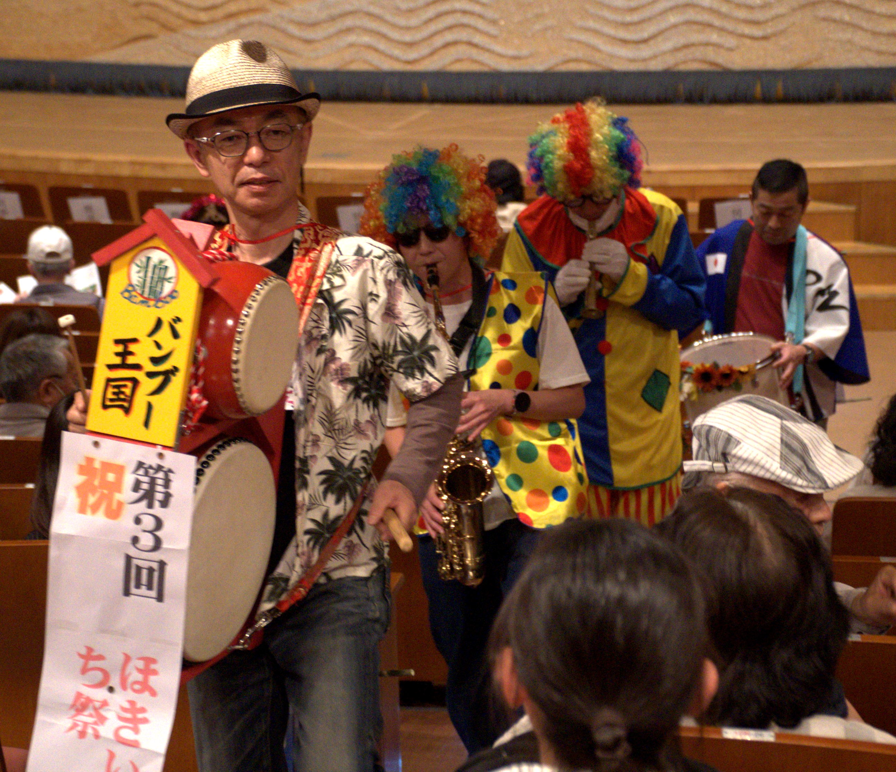
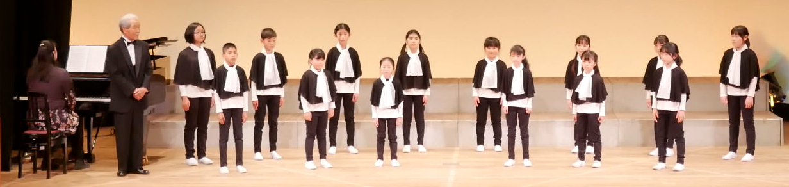
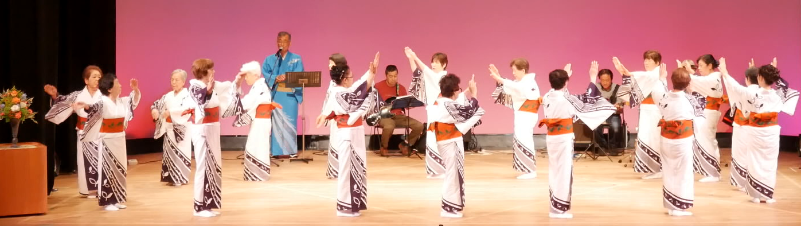

本庄市の元・埼玉県議会議員 竹並万吉氏は、郷土の偉人・塙保己一先生を「本庄市の偉人」から「世界に誇る偉人」へ高めるために、民間主導で塙保己一先生を顕彰する「ほきいち祭実行委員会」を組織して、令和５年５月５日に市民が楽しく学べる「ほきいち祭」を始めました。
今年は本庄地区で午後だけのホールイベントですが、皆様のご来場をお待ちしています。詳細は『当日冊子』をご覧ください。





令和７年１２月、竹並万吉会長はお亡くなりになりました。令和８年１月の「お別れの会」には、ほきいち祭実行委員会として「竹並万吉氏の塙保己一顕彰」冊子を配布し、故人の遺徳を称えました。令和８年からは荒井一夫が会長になりました。